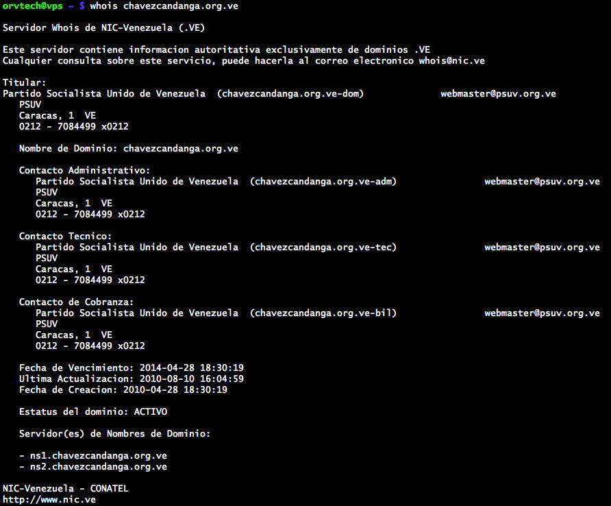
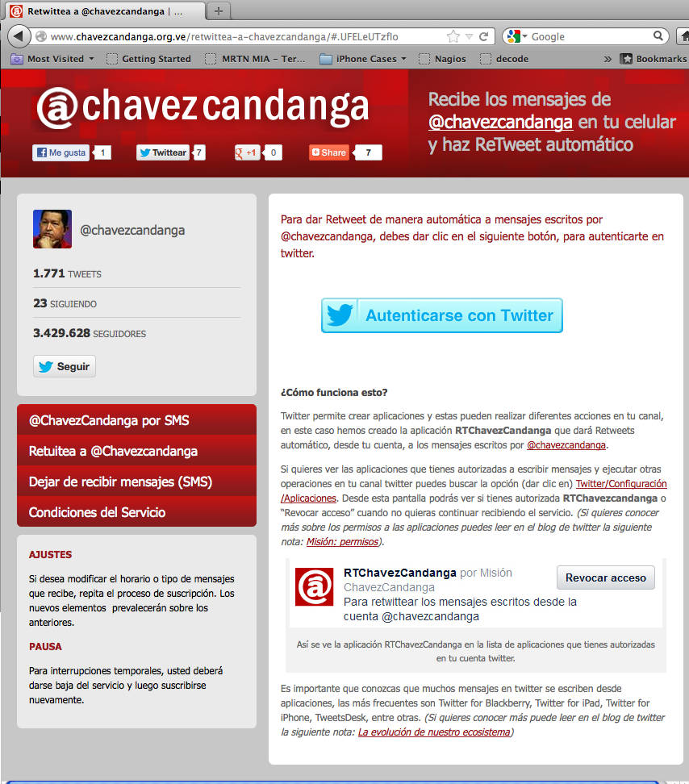

Catching a Nation-State Proxy: OSINT Lessons from the Twitter Frontlines
Posted on Thu 17 April 2025 in Threat Intelligence
🛰️ Situation
In the lead-up to Venezuela’s 2012 regional elections, I observed unusual behavior around Twitter access within the country. What began as anecdotal reports of DNS outages evolved into a deeper investigation that revealed a state-aligned proxy infrastructure potentially capable of phishing Twitter credentials.
🧠 Key Finding
A subdomain under chavezcandanga.org.ve — the official handle of then-President Hugo Chávez — was hosting a transparent proxy to Twitter.
A transparent proxy intercepts user traffic without modifying requests or requiring configuration, making it ideal for passive surveillance or phishing.
While it initially showed no malicious behavior, it was:
- Hosted on IP addresses outside of Twitter’s ranges
- Registered under infrastructure owned by the Venezuelan government (PSUV – Partido Socialista Unido de Venezuela)
- Promoted through state-controlled media and bot accounts
- Served from the same IP as a political messaging app
🔎 OSINT Breakdown
1. ✅ DNS Resolution
host twitter.com
Returned expected Twitter IPs (199.59.x.x), but users in Venezuela were silently being redirected to:
190.202.80.20
This IP served Twitter content but was not operated by Twitter Inc.
It’s unclear whether this redirection was caused by ISP DNS override, local resolver poisoning, or upstream hijack — but the net effect was consistent: Twitter domains were silently redirected to non-Twitter infrastructure under state control.
2. ✅ WHOIS and Hosting Clues
whois chavezcandanga.org.ve
Revealed that the domain was registered to PSUV (Partido Socialista Unido de Venezuela) and managed through CONATEL — Venezuela’s FCC-equivalent telecommunications regulator.
 Figure: WHOIS lookup confirms chavzescandanga.org.ve is registered to PSUV, with administrative and technical contacts using @psuv.org.ve emails.
3. ✅ Application Infrastructure
The same server IP hosted:
mensajes.chavezcandanga.org.ve– a campaign messaging platform- A proxy script that mirrored Twitter’s login screen
 Figure: The official chavzescandanga.org.ve campaign app asks users to authenticate with Twitter to enable automatic retweets of Chávez's posts.
At the time of discovery, this site did not contain malicious code, but the potential for credential harvesting during peak election activity was substantial. The authentication flow mimicked Twitter’s branding and prompted users to log in — creating a window for silent credential capture, token misuse, or targeted amplification based on follower behavior.
🔐 Threat Model & Implications
- Credential Harvesting Risk: Even without malware, a proxy to Twitter login enables password theft.
- Social Media Control: Through automated bots, the government amplified its message while monitoring access points.
- Authentication-layer surveillance: Intercepting Twitter logins enables password theft, identity tracking, or selective disinformation at the user level.
- Infrastructure trust erosion: Even minor state-level interference with DNS or TLS undermines confidence in web authentication across the board.
- Evasion of International Scrutiny: By mimicking Twitter directly, users could be deceived into trusting a controlled proxy.
🧰 Lessons for DevSecOps & Threat Intelligence Today
- Verify SSL and domain trust chains during high-risk periods like elections.
- Use
host,whois, and passive DNS to correlate domains and IP ranges. - Watch for content delivery mismatches (site appears normal, IP is not).
- Document and archive suspicious infra using tools like the Wayback Machine.
- Phishing infrastructure can be state-sponsored and subtle — early detection matters.
📅 Epilogue
The proxy remained active until at least December 2012, shortly before elections. To this day, the archived proxy content and WHOIS records serve as a warning about the ease with which social media can be co-opted in hostile environments.
This investigation was one of the earliest times I realized how fragile trusted infrastructure becomes in the hands of a motivated actor — and how critical open-source techniques are in defending it.
Have you ever spotted unusual network redirections or infrastructure anomalies? What tools or tactics helped you confirm your suspicions?
Originally published in 2012 and revisited in 2025 to reflect current DevSecOps and threat intelligence practices.